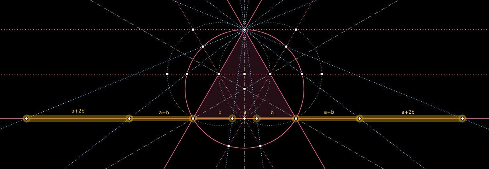

GEOMETOR
exploring the architecture of all that is
GEOMETOR is an open-source initiative dedicated to the exploration of fundamental aspects of geometry, nature, and logic.
A key mission has been the development of a Python software library to create symbolic models of classical geometric constructions
abstraction and reasoning

While the emphasis of the GEOMETOR project, has been geometry
arcprize: code and reference materials
geometric modeling

All of the research and development for GEOMETOR is located here in a collection of repositories. There are many, but these establish the foundation for the work:
patterns in nature

phyllotaxis
model and investigate geometry of plants
other interesting projects
pappus
model and investigate pappus theorem
Each repository has:
Python source code
demo code
source for project website
discussion group
log
todo list
MIT license
The website for each project is statically-generated and hosted through GitHub.
contribute
We welcome contributions from anyone interested in geometry, mathematics, nature, or programming. Feel free to contribute to our repositories, raise issues, or propose enhancements.
Check out general info on GEOMETOR:
GEOMETOR is an organization led by phi ARCHITECT
recent logs
23.324 - First Log - Lots of changes
This log entry marks the commencement of the Geometor.model project. After extensive changes in recent months, the project’s concepts, though not new, are entering a phase of significant development. The primary focus has been on refining the Geometor code, transitioning from the original Geometor Explorer, which encompassed a broad range of functions, to a more segmented approach. This segmentation allows for a clearer division of the project’s key components: modeling, rendering, and analyzing complex geometric constructions.
22.348 - Welcome to GEOMETOR.com
first log entry for the new system